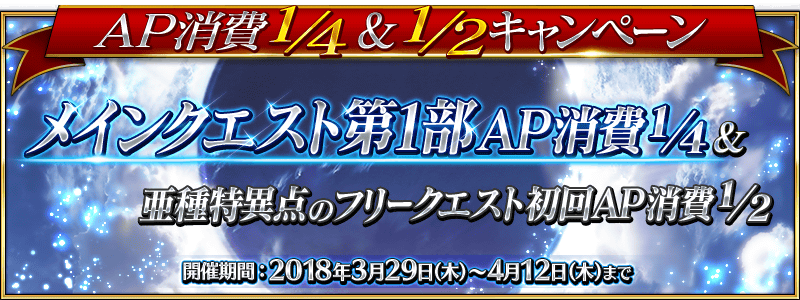

2018年3月29日(四) 17:00～4月12日(四) 11:59的期間，舉辦主線關卡第1部的AP消耗1/4、亞種特異點的自由關卡初次通過前的AP消耗1/2宣傳活動！
◆舉辦期間◆
2018年3月29日(四) 17:00～4月12日(四) 11:59
※已通過的自由關卡為對象外。
※強化關卡、幕間物語、曜日關卡為對象外。
現在永久舉辦的AP消耗量1/2狀態，再追加AP消耗量1/2，主線關卡第1部(從特異點F到終局特異點)的AP消耗量以期間限定變成1/4！
還未通過主線關卡第1部的Master，無論如何藉此機會通關至終局特異點吧！
◆對象關卡◆
主線關卡第1部(從特異點F到終局特異點)
※請注意第1部的自由關卡為對象外。
※在戰鬥中撤退的情況AP的消耗也是1/4。

亞種特異點(從Ⅰ到Ⅳ)的自由關卡初次通過前的AP消耗量以期間限定變成1/2！
於亞種特異點還留有未通過自由關卡的Master，無論如何藉此機會通關吧！
◆對象關卡◆
亞種特異點(從Ⅰ到Ⅳ)的所有的自由關卡對象
※請注意亞種特異點的主線關卡為對象外。
※初次通過意指入手初次通過報酬的時間點前。
※在戰鬥中撤退的情況，於關卡通過前AP的消耗也是1/2。